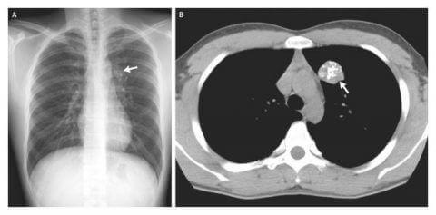
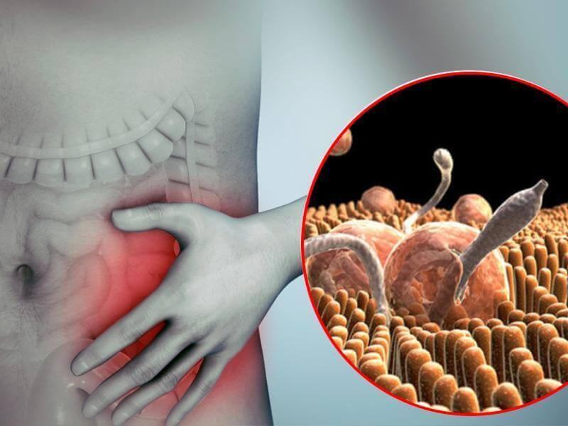

Hozzáadva 10:32
Szerkesztő: orvosok megállapították, hogy az összes egészségügyi probléma több mint 80%-át paraziták okozzák. Egy nemrégiben készült tanulmány kimutatta, hogy a paraziták élettevékenységének termékei és maguk a férgek kedvező környezetet teremtenek a kórokozó baktériumok növekedéséhez a bélben. Ezért a parazitákkal fertőzött emberek gyakran szenvednek különböző betegségekben.
- Kovács professzor, mondja: igaz-e, hogy Magyarország az első helyet foglalja el a parazitákkal fertőzött emberek száma alapján?
- Országunk az egyik legfertőzöttebb ország. Ennek oka a népsűrűség és a polgárok személyes higiéniájának csökkenése.
Professzor, mennyire igaz a helminták vonatkozó kutatás?
- Néhány évvel ezelőtt az orvosok még csak tanulmányozták az elfogyasztott étel és a puffadás közötti kapcsolatot. A legújabb kutatások azonban kimutatták, hogy van egy másik fontos oka ennek a problémának – paraziták. Tudósok szerint ezek figyelmen kívül hagyása nagyon veszélyes, mivel a helminták számos betegség és egészségügyi probléma forrásait jelentik.
Személy szerint bízom ezekben a tanulmányokban és elmondhatom, hogy intézményünk legújabb kutatási eredményei megerősítik őket. Az emberi betegségek több mint 80%-át paraziták okozzák. Beleértve a gyakori flatulenciát is, amely súlyos problémává alakulhat át. Új tanulmányok szerint a „természetes halálesetek” túlnyomó része az emberi szervezet parazita aktivitásának következménye.
- Tehát a paraziták csak közönséges férgek, amelyek puffadást és halált okozhatnak?
- Valójában a paraziták nem csupán férgek. Sokféle parazita létezik, amelyek különböző szervekben élnek és számos egészségügyi problémához vezetnek. Ezenkívül a férgek, különösen a fonálférgek, nagyon veszélyesek lehetnek. Ezek a férgek szó szerint elpusztítják a beleket, azok rothadásához és halálhoz vezethetnek. Mellesleg, a fonálférgek diagnosztizálása és eltávolítása nem könnyű.
Adjon hozzá több ezer más parazitát, amelyek élhetnek a májban, az agyban, a tüdőben, a vérben és a gyomorban. Ezen paraziták szinte mindegyike halálos. Néhányuk azonnal agresszívvá válik és mérgezni kezdik a testét. Mások csendben szaporodni kezdenek és nem is veszik észre őket, amíg számuk el nem éri a kritikus szintet. Akkor olyan sok van belőlük, hogy a szervezet egyszerűen nem képes elviselni és az ember meghal
Biztosan megerősíthetem, hogy szinte minden ember fertőzött parazitákkal. Néhány féregtől könnyű megszabadulni. Másokat nehéz felismerni. Amikor kezelésre kerül a sor, az orvosok felesleges készítményeket írnak fel, haszontalan eljárásokat írnak elő, mert nem tudják, hogy a rosszullét okai a férgek.
"Több ezer parazita létezik, amelyek az önök belső szerveiben élhetnek. Gyakorlatilag mindegyikük halálosan veszélyes. Puffadás – a férgek egyértelmű jele"
- Tudna-e mutatni konkrét példákat a férgek által okozott veszélyekre?
- Több száz esetet említhetek, de csak a legsúlyosabb esetekről fogok beszélni.
Először is, bizonyos típusú szalagférgek rákot okozhatnak. A férgek mérget, toxint és salakanyagot választanak ki. Mindez megmérgezi a szervezetet és rosszindulatú daganatok kialakulásához vezet. A halál szinte néhány hónap alatt bekövetkezik. Pont a múlt héten halt meg egy ember ilyen daganatban.
Fénykép egy daganatról, amelyet a szervezet hosszútávú parazitákkal való mérgezése okozott:

Emellett az emberi agy is komolyan szenved a parazitáktól. Ez neurózishoz, gyors fáradtsághoz, súlyos ingerlékenységhez és hirtelen hangulatingadozásokhoz vezet. Hiszen mindannyiunknak vannak ilyen megnyilvánulásai, nem igaz? De még csak nem is gondolunk rá, hogy mi az oka.
A későbbi stádiumokban, amikor az agy tele van parazitákkal, súlyosabb problémák jelentkeznek, amelyek halálhoz vezetnek. "Fotóarchívummal rendelkezünk azoknak az embereknek a boncolásairól, akik halálát a paraziták hatása okozta. Meg fognak rémülni ezektől a képektől."
Harmadik példa - paraziták, amelyek a szívbe jutnak. Az orvosok szerint ez egy meglehetősen ritka probléma, ám valójában az emberek akár 23% -a is szenved ettől a problémától. Más szóval, minden negyedik embernek parazita van a szívében. A kezdeti szakaszban a probléma észrevétlen lefolyású, a szervezetre gyakorolt hatásuk nulla. Idővel azonban a férgek szívben történő aktivitása észrevehetőbbé válik. Sok szívproblémát és akár szívleállást is okozhatnak.
- Milyen veszélyekkel járnak még a férgek?
A paraziták a férfiaknál okoznak: prosztatagyulladást, impotenciát, adenómát, cisztát, homokot vagy követ a vesében és a húgyutakban.
A nőknél petefészek-gyulladást, fibrómát, miómát, mellproblémákat, valamint húgyúti és vesegyulladást okoznak.
- Hogyan védi meg magát a parazitáktól? Van valamilyen gyógyszer?
- Jelenleg nincs hatékony módszer a paraziták kimutatására a szervezetben. Ez részben azzal van összefüggésben, hogy annyira sok féreg létezik (fajok ezrei) és azzal is, hogy ezeket nehéz megtalálni. Magyarországon ezek a tesztek csak néhány helyen érhetők el és sok pénzbe kerülnek. 
A parazitafertőzés első tünetei a következők:
Ha a fenti tünetek közül legalább az egyikkel rendelkezik, akkor biztosan vannak parazitái és sürgős intézkedéseket kell tennie, amíg az állapota kritikus szintre nem romlik.
Csak egy készítmény létezik, amely segít megszabadulni a parazitáktól. Ezt a szert Magyarországon fejlesztették ki.
- Mi ez a készítmény és ki alkotta meg? Mesélne róla?
Ennek az antihelmintikus szernek a neve és a Parazitológiai Intézettel és független fiatal tudósok csoportjával együttműködve fejlesztették ki. Feladatunknak tekintettük, hogy létrehozzunk egy készítményt a férgek ellen. Ehhez összehasonlító elemzést készítettünk a növényekről, amelyek hatékonyan segítenek megszabadulni a parazitáktól. Négy hónappal később kifejlesztettük az összetételt.
összetétele: szegfűszeg, diófalevél, golgotavirág gyökere, sárga tárnicsgyökér. A fejlesztés és a tesztelés során készítményünk nagy hatékonyságot mutatott. A mai napig nem létezik erősebb készítmény a paraziták ellen. Az amerikai cégek sorban állnak érte, hogy megvásárolhassák, de a mi szabályaink szerint ez nem lehetséges.
A készítményt közvetlenül értékesítjük. Ez lehetővé teszi, hogy olcsón árulhassuk.
- Miért olyan jó a ? Miben különbözik a többi parazitaellenes készítménytől?
- Mint már mondtam, ez az egyetlen szer, ami működik. A fő hatás az, hogy a segít megölni az összes parazitát, ami jelen van a szervezetben. Míg mások csak egy részüket pusztítják el és nem hatnak tojásaikra, így a helminták továbbra is aktívan szaporodnak. Ezen kívül a szer természetes, nincs mellékhatása, nem pusztítja el a bél mikroflóráját, mint sok szer. Nincs hányinger, nincs szédülés, nincs gyengeség – egyik sincs és nem is lesz.
- Azt hiszem, az olvasóink szeretnék tudni, hol lehet megvásárolni ezt a készítményt?
- Meg lehet rendelni a készítményt a gyártó weboldalán. Megpróbáltunk megegyezni a gyógyszertárakkal, de a gyógyszerészek sok pénzért akarják eladni ezt a terméket, sokkal drágábban, mint mi áruljuk. A Parazitológiai Intézet nonprofit szervezet, nem igyekszünk pénzt keresni. Azért fejlesztettük ki a terméket, hogy segítsünk az embereken, a gyógyszertárak fő célja pedig a pénzkeresés, tehát teljesen eltérő politikájuk van.
Remélem, hogy egy idő után megegyezünk valakivel és a készítményt kedvező áron fogják árulni a gyógyszertárakban. Most csak online tudják megrendelni. Megpróbáltuk ezt könnyűvé és kényelmessé tenni. A készítményt postán vagy futárral kézbesítjük Önnek és csak akkor fizet, ha megkapja a rendelést. Nem kell előre fizetnie.
- Szeretne még mondani valamit olvasóinknak a végére?
Csak azt akarom mondani, hogy vigyázzanak egészségükre és életükre. Lehet, hogy nem ismerik el, ám 97-98% esély van arra, hogy parazitáik vannak. Mindenhol ott lehetnek - a vérben, a belekben, a tüdőben, az agyban, a szívben. Ne feledjék, hogy a férgek nagyon veszélyesek és megmérgezik a szervezetet. Meg kell szabadulni tőlük, amilyen gyorsan csak lehet.
P.S.: Kovács Martintól kedvezményt kértünk olvasóinknak. Beleegyezett és most a 50% kedvezménnyel vásárolható meg.
Interjút készítette Peller Katalin
Fotók ingyenes forrásokból
Edit, Dunaújváros -
Kipróbáltam ezt a készítményt. Az ötödik napon úgy éreztem, hogy a hasam rendben van. Ezen kívül a gyomrom jobban kezdett el működni. Még biztosan rendelek
Péter, Pécs -
Amikor elkezdtem a kúrát, nem is gondoltam, hogy ilyen jól fog működni. A gyomorfájdalom (úgy tűnik, valami a beleimben volt), a légzési problémák enyhültek és elkezdtem jól érezni magam. Most 53 éves vagyok és sokkal jobban érzem magam, mint a legtöbb harmincas ember. Köszönöm, hogy felnyitotta az emberek szemét és felvetette ezt a kérdést. A magánorvosa nem fogja elmondani ezeket a dolgokat.
Szabolcs, Eger -
Megrendeltem a terméket és másnap megkaptam postán. Elkezdtem inni és a beleim sokkal jobban kezdtek működni. Félek belegondolni, mi lehetett a gyomromban!
Éva, Kaposvár -
Köszönöm ezt a cikket! Már megrendeltem ezt a szert.
Erik, Szeged -
Én is ezt rendeltem meg. Megígérték, hogy a csomag egy héten belül megérkezik. Már nagyon várom.
Noémi, Győr -
Szedtem a terméket, csodálatosan működik. Fiatalnak és egészségesnek éreztem magam. Az immunrendszerem sokkal jobban működik és még 8 hónappal a kúra vége után sem lettem beteg egy napig sem.
János, Budapest -
Nemrég láttam egy TV műsort az emberi parazitákról. Beszéltek erről a termékről, ami állítólag jobban működik, mint a világ összes parazitaellenes készítménye. Azt hiszem, volt egy miniszter a műsorban.
Nóra, Kisvárda -
A nagymamám tanított meg megszabadulni a parazitáktól. Az egész családom használta házi készítésű készítményét a szervezet megtisztítására. De én nem tudtam megszabadulni a puffadásomtól. Megrendeltem a terméket és most minden rendben. Egyébként a nagymamám gyógyszere nagyon keserű volt, így most mindannyian -t iszunk.
Bence, Békéscsaba -
Nagyon sokáig szenvedtem erős fejfájástól, de a kúra után minden jobb lett!
Gyula, Sopron -
Ez az interjú nagyon érdekes volt, köszönöm! Felnyitja az emberek szemét!
Sándor, Debrecen -
A készítmény tényleg nagyon hatékony, mivel egy kúra után enyhült a krónikus náthám és megfázásom. Ez egyszerűen csodálatos!
Réka, Sátoraljaújhely -
Ez igaz? Miért csak online kapható?
Mariann, Nyíregyháza -
Asszony, olvastad egyáltalán ezt a cikket? Az interneten kapható, mert a gyógyszertárak igyekeznek minél többet keresni a szer eladásán!
Réka, Sátoraljaújhely -
Bocsánat, már látom és megrendeltem.
Klára, Kalocsa -
Ez egy nagyszerű termék! A férjemmel isszuk és remekül érezzük magunkat. Érezzük, hogy egyre fiatalabbak leszünk. Most már több erőnk van, a paraziták határozottan gyengítik az embert. Ha megszabadul tőlük, teljesen másképp fogja érezni magát.
Károly, Székesfehérvár -
Köszönöm ezt a cikket, nekem is meg kell tisztítani a szervezetem. Még soha nem csináltam ilyet, de most már értem, hogy veszélyes elhanyagolni a szervezetet.
Emília, Budapest -
Elolvastam az összes hozzászólást, és rájöttem, hogy végig kell csinálnom a kúrát.